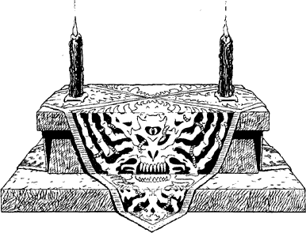

265
In case there are any among the congregation who have the power to sense your presence, you draw upon your Disciplines of camouflage and mental defence to minimize the risks of being detected.
A few uneventful minutes pass until another druid enters the hall, ascending from a circular stairwell to your left. He is a tall, imposing figure, dressed in glittering blue robes edged with black velvet. The congregation rises as he walks to the altar, where he turns to face them.
{kind=link}

‘Be seated my brothers,’ he commands, in a voice that is deep and resonant. At once you suspect that he is Arch Druid Cadak himself, but his opening address soon dispels this idea.
‘The battle against the Slovians goes in our favour. We have repulsed their puny attacks and our defences along the Storn remain intact. The Slovians are beaten. They are too weak to threaten us again. I, Kadrian, have seen the great river running red with the blood of their slain.’
Upon hearing this the congregation screech their approval until Kadrian calls for silence. Then, from a tome lying on the altar, he begins to read the opening passages of a service dedicated to Xuzargha, the Cenerese God of pestilence. The gathering fall to their knees, raise the hoods of their robes, and close their eyes in reverence as they listen devoutly to Brother Kadrian’s sonorous voice.
Anxious to leave this hall, you look around for a means of escape. Two opportunities present themselves: the circular stairwell by which Brother Kadrian entered the hall, and a door to your right marked ‘Vestibule’.
If you wish to descend the circular staircase, turn to 119.
If you decide to enter the door marked ‘Vestibule’, turn to 280.